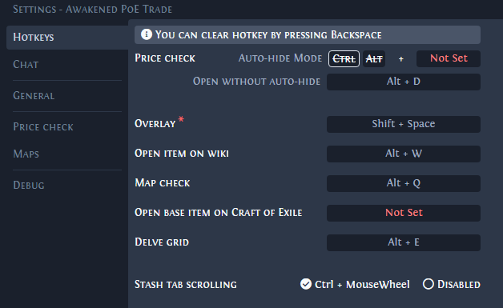

Trade Macros
Trade macros are external tools that allow players to check item values and trade for items with other players more easily.
Awakened PoE Trade
Awakened PoE Trade is a third-party tool that can be downloaded and installed for both Windows and Linux. It features a price checking function that uses real-time data and predictions to give players an estimate of item value.
The tool updates automatically if you use the installer on Windows.
Run the game in Windowed or Windowed-Fullscreen mode for the program to function properly.
-
Pressing
Shift+Spacewill open the tool’s in-game overlay where you’ll find the settings.- You can change or assign new hotkeys from within the in-game overlay.
|
Common default hotkeys:
-
Pressing
Ctrl+Dwhile hovering over an item will allow you to price check the item.- The price check window will close automatically if your cursor stops hovering over the item.
-
Pressing
Ctrl+Alt+Dwill allow you to price check an item and modify parameters without the window closing. -
Pressing
F5will send the/hideoutcommand if your character is in a town or another player’s hideout.